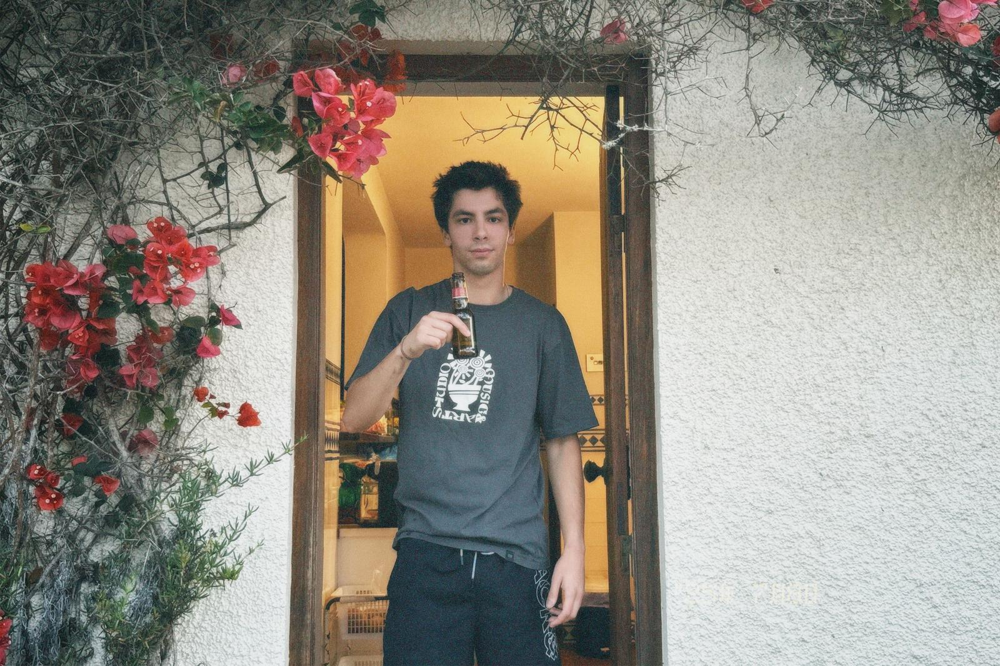

2025
PORTFOLIO
António Simões
About Me

My name is António Simões, I'm 23 years old and I'm from Coimbra. I have a degree in Design and Multimedia from FCTUC of the University of Coimbra. I am passionate about creating visually compelling and meaningful designs that communicate ideas effectively. In this portfolio, I showcase some of my best work — projects that I feel most proud of, that reflect my personal style, and that I have truly enjoyed developing. I aim to combine creativity, functionality, and attention to detail in every piece I create, constantly learning and exploring new design approaches along the way.